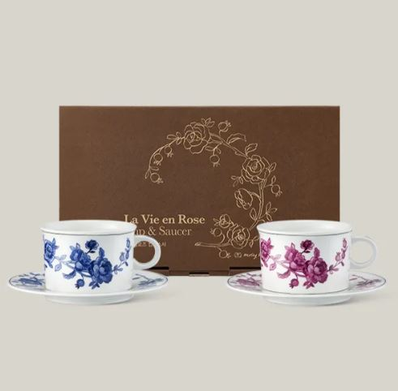
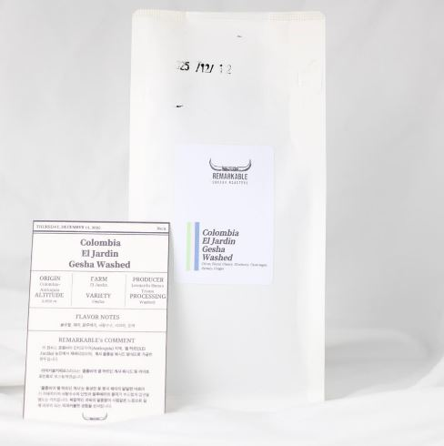
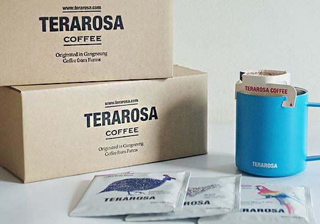
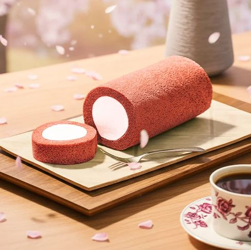

3월 에티오피아 칠라카
봄꽃 향의 대표
칠라카는고도가 높은 지역이기 때문에, 커피 체리의 성장 속도가 상대적으로 느립니다.
그 결과 밀도 높은 생두가 형성되고 이 밀도는 로스팅 시 에너지 전달을 안정적으로 만들어주어,
산미의 결이 고르고 질감이 정돈된 형태로 나타납니다.
칠라카는고도가 높은 지역이기 때문에, 커피 체리의 성장 속도가 상대적으로 느립니다.
그 결과 밀도 높은 생두가 형성되고 이 밀도는 로스팅 시 에너지 전달을 안정적으로 만들어주어,
산미의 결이 고르고 질감이 정돈된 형태로 나타납니다.

전통의 미학과 현대적인 감각을 담아낸 커피 잔.
테라로사가 직접 디자인한 섬세한 커피잔에 몰리 해치와 콜라보로 담아낸 우아한 장미 패턴

백합을 연상시키는 꽃내음과 복합적인 플로럴 아로마. 싱그러운 청사과와 상큼한 파인애플의 산미, 달콤한 꿀과 같은 풍미와 부드러운 질감이 긴 여운으로 남는 커피

선물상자에 담긴 드립백 30개 세트. 이달의 드립백 3종 구성

부드러운 홍국쌀 시트에 딸기 크림을 듬뿍 넣은 롤케이크